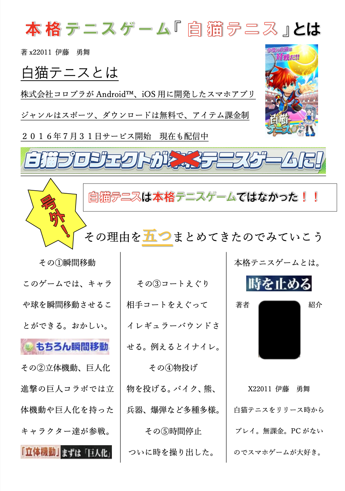
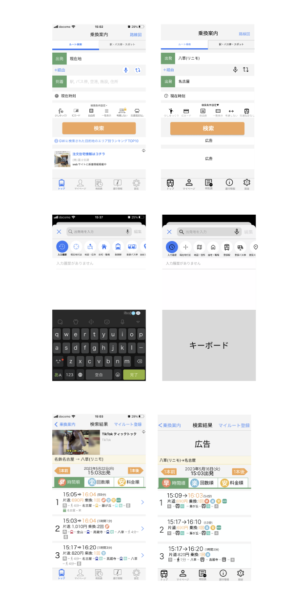
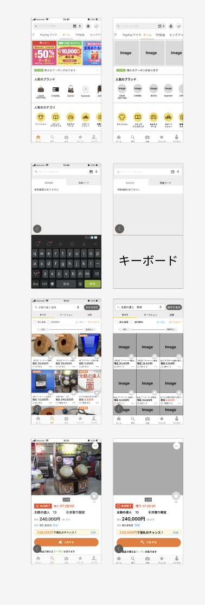

その他の作品等
高校の時の作品

Adobe Animateで作った作品
ローディング画面のgif画像
同じくAdobe Animateで作った作品
ボールが落ちてドミノ倒しをするが少しぎこちない
一枚一枚写真で撮ってそれを繋げることによって作った作品。
あらすじとしては攫われた子供を助ける話
大学での作品

号外を作るという趣旨で作成した作品。
自分の顔の部分は恥ずかしいので黒塗りさせていただきます
Adobe Animateを使った作品
先ほどのイラストレーターのポートフォリオにあった動画
同時進行を題材として作った作品


Figmaを使用して元々あるサイトを真似して作ったもの。
右側が自分のオリジナルで作ったもの。